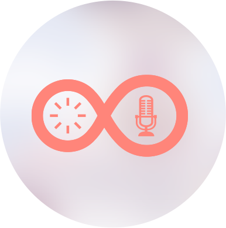

<ion-menu [content]="content">
  <ion-header >
  </ion-header>
  <ion-content id="body">
     
     <span class="userspan">{{username}}</span>
    <ion-list>
      <button menuClose ion-item *ngFor="let p of pages" (click)="openPage(p)">
        {{p.title}}
      </button>
    </ion-list>
  </ion-content>
</ion-menu>

<!-- Disable swipe-to-go-back because it's poor UX to combine STGB with side menus -->
<ion-nav [root]="rootPage" #content swipeBackEnabled="false"></ion-nav>